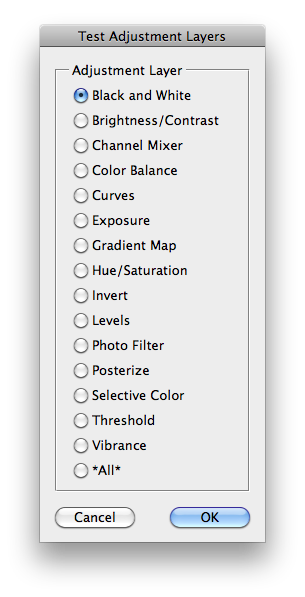
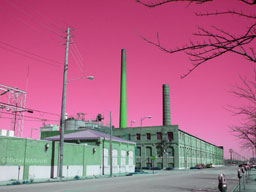
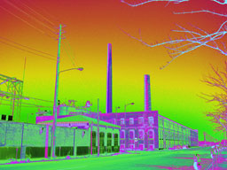
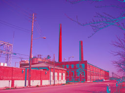

Test Adjustment Layers
This script is part of the set of Test Scripts coming with the JSON Action Manager scripting library.
It shows how to create various adjustment layers:

Black and White
Brightness/Contrast
Channel Mixer

Color Balance

Curves

Exposure
Gradient Map
Hue/Saturation
Invert
Levels
Photo Filter
Posterize
Selective Color

Threshold
Vibrance
Back to JSON Action Manager Test Scripts